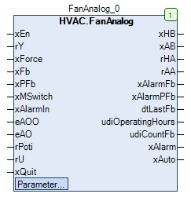

FanAnalog (FB)¶
FUNCTION_BLOCK FanAnalog
Short Description¶
Control of a variable speed fanAdditional functions: Manual override, repair switch, operating hours counter, air shortageTypical application: Control of a fan with frequency converter
Portrayal¶

Interfaces¶
Inputs¶
Name Datatype
Range
Init-Value
Functional Description
xEn BOOL Fan request ( FALSE = Off, TRUE = On )
rY REAL Control signal - Speed 0.0 - 100.0 %
xForce BOOL FALSE Forced shutdown of the fan after manual override ( FALSE = Off, TRUE = On )
xFb BOOL Operating message of the fan ( FALSE = Off, TRUE = On )
xPFb BOOL Feedback of the low air pressure monitoring ( FALSE = low air pressure, TRUE = no low air pressure )
xMSwitch BOOL TRUE Feedback of the repair switches ( FALSE = switch off, TRUE = switch on )
xAlarmIn BOOL Alarm message of the fan ( FALSE = Off, TRUE = On )
eAOO HVACTYPES.eManBin HVACTYPES.eManBin.Auto, HVACTYPES.eManBin.ManOff, HVACTYPES.eManBin.ManOn HVACTYPES.eManBin.Auto Operating mode of manual override - Hardware for enabling
eAO HVACTYPES.eManNum HVACTYPES.eManNum.Auto, HVACTYPES.eManNum.Man HVACTYPES.eManNum.Auto Operating mode of manual override - Hardware for the control signal
rPoti REAL Manual value - Manual override - Hardware for the control signal
rU REAL Feedback signal from the fan in %.
xQuit BOOL FALSE Reset of the alarm messages ( monitoring ) ( FALSE = Off, TRUE = On )
Outputs¶
Name Datatype
Range
Init-Value
Functional Description
xHB BOOL Enable - Fan after manual override ( FALSE = Off, TRUE = On )
xAB BOOL Enable - Fan before manual override ( FALSE = Off, TRUE = On )
rHA REAL Control signal - Fan after manual override in %
rAA REAL Control signal - Fan before manual override in %
xAlarmFb BOOL Alarm message for the operation monitoring ( FALSE = Off, TRUE = On )
xAlarmPFb BOOL Alarm message for low air pressure monitoring ( FALSE = Off, TRUE = On )
dtLastFb DATE_AND_TIME Date / time of last fan operation
udiOperatingHours UDINT Operating hours of the fan
udiCountFb UDINT Number of starts of the ventilator
xAlarm BOOL Collective fault message ( FALSE = Off, TRUE = On )
xAuto BOOL Collective message - automatic mode ( FALSE = no automatic mode, TRUE = automatic mode )
Setpoints / Parameters¶
Name Datatype
Range
Init-Value
Functional Description
udiPFbControlTime UDINT 0 ... 3600s 60s Signal delay of the low air pressure monitoring in s
xPFbControl BOOL TRUE Enable / disable low air pressure monitoring ( FALSE = disable, TRUE = enable )
xAlarmControl BOOL TRUE Influence of xAlarm on xAB ( FALSE = no influence, TRUE = blocking )
udiFbControlTime UDINT 0 ... 300s 60s Signal delay of operation monitoring in s
xFbControl BOOL TRUE Enable / disable operation monitoring ( FALSE = Disable, TRUE = Enable )
eManValue REAL Control signal in manual operation in %
eManModeN eManNum eManNum.Auto, eManNum.man eManNum.Auto Operating mode of manual override for the control signal rHA
eManModeB eMANBIN eMANBIN.Auto, eMANBIN.ManOff, eMANBIN.ManOn eMANBIN.Auto Operating mode of manual override for the xHB digital output
Functional Description¶
General¶
Enable - Fan before manual override xAB¶
Enable - Fan after manual override xHB¶
xAB eManModeB xHB Notes
FALSE eMANBIN.Auto FALSE Manual override module in automatic mode
TRUE eMANBIN.Auto TRUE Manual override module in automatic mode
X eMANBIN.ManOn TRUE Manual override module in manual mode On
X eMANBIN.ManOff FALSE Manual override module in manual mode Off
Repair switch message xMSwitch¶
Forced shut-off of the fan after manual override xForce¶
Operating hours and switch-on procedures¶
Write access to the counter readings
Prerequisite for using the FanAnalog function block
Date / time of the last operation of the fan dtLastFb¶
Operation monitoring¶
low air pressure monitoring¶
Collective alarm signal xAlarm¶
Control signal for fan before manual override rAA¶
Control signal for fan after manual override rHA¶
rAA eManModeN rHA Notes
X eMANNUM.Auto rAA Manual override module in automatic mode
X eMANNUM.Man eManValue Manual override module in manual mode
Collective message automatic mode xAuto¶
Visualization¶
Codesys¶
- InOut:
Scope Name Type Initial Comment Input xEn BOOL Fan request ( FALSE = Off, TRUE = On )
rY REAL Control signal - Speed 0.0 - 100.0 %
xForce BOOL FALSE Forced shutdown of the fan after manual override ( FALSE = Off, TRUE = On )
xFb BOOL Operating message of the fan ( FALSE = Off, TRUE = On )
xPFb BOOL Feedback of the low air pressure monitoring ( FALSE = low air pressure, TRUE = no low air pressure )
xMSwitch BOOL TRUE Feedback of the repair switches ( FALSE = switch off, TRUE = switch on )
xAlarmIn BOOL Alarm message of the fan ( FALSE = Off, TRUE = On )
eAOO eManBin HVACTYPES.eManBin.Auto Operating mode of manual override - Hardware for enabling
eAO eManNum HVACTYPES.eManNum.Auto Operating mode of manual override - Hardware for the control signal
rPoti REAL Manual value - Manual override - Hardware for the control signal
rU REAL Feedback signal from the fan in %.
xQuit BOOL FALSE Reset of the alarm messages ( monitoring ) ( FALSE = Off, TRUE = On )
Output xHB BOOL Enable - Fan after manual override ( FALSE = Off, TRUE = On )
xAB BOOL Enable - Fan before manual override ( FALSE = Off, TRUE = On )
rHA REAL Control signal - Fan after manual override in %
rAA REAL Control signal - Fan before manual override in %
xAlarmFb BOOL Alarm message for the operation monitoring ( FALSE = Off, TRUE = On )
xAlarmPFb BOOL Alarm message for low air pressure monitoring ( FALSE = Off, TRUE = On )
dtLastFb DT Date / time of last fan operation
udiOperatingHours UDINT Operating hours of the fan
udiCountFb UDINT Number of starts of the ventilator
xAlarm BOOL Collective fault message ( FALSE = Off, TRUE = On )
xAuto BOOL Collective message - automatic mode ( FALSE = no automatic mode, TRUE = automatic mode )
Input udiPFbControlTime UDINT 60 Signal delay of the low air pressure monitoring in s
xPFbControl BOOL TRUE Enable / disable low air pressure monitoring ( FALSE = disable, TRUE = enable )
xAlarmControl BOOL TRUE Influence of xAlarm on xAB ( FALSE = no influence, TRUE = blocking )
udiFbControlTime UDINT 60 Signal delay of operation monitoring in s
xFbControl BOOL TRUE Enable / disable operation monitoring ( FALSE = Disable, TRUE = Enable )
eManValue REAL Control signal in manual operation in %
eManModeN eMANNUM eMANNUM.Auto Operating mode of manual override for the control signal rHA
eManModeB eMANBIN eMANBIN.Auto Operating mode of manual override for the xHB digital output